1 情報共有
- 第37回高専プロコン（2026年 香川（高松）大会） YouTube 配信 2026/10/10・11（配信リンクは公式ページの「放送予定」を参照）
- 第36回高専プロコン（2025年 松江大会） YouTube配信 2025/10/11・12
- 第35回高専プロコン（2024年
奈良大会）YouTube配信 2024/10/19・20
- 全国の高専生はどんなアプリやソフトを開発しているの? …リンク先の「大会パンフレット」も確認してください。
2 ここまでの流れ
後期中間試験ぐらいまでの授業の流れ (予定)
- モダンTypeScript基礎学習のための環境構築 済
- TypeScript基礎学習
- React / Next.js 開発に関連する文法や機能だけを集中的に学びます。
- React を用いた「Todoアプリ」開発のための環境構築 ← 今回の授業のメイン
- Todoアプリの設計・実装 (Reactによるフロントエンド) のチュートリアル
- Todoアプリのカスタマイズや作り込み → 📝課題1
- 参考: 2025年度の学生作品 (学内のみ)
- 参考: 2024年度の学生作品 (学内のみ)
しばらく、次のような「Todoアプリ」を開発することを目標として授業が展開します。
- Todoアプリのサンプル (チュートリアルそのままに近いもの)
- Todoアプリのサンプル (内容を理解して機能追加やカスタマイズされたもの)
3 React開発環境の構築
Vite というビルドツールを使用して TypeScript と Tailwind CSS を組み合わせた React アプリケーションの開発環境を構築する手順について解説 していきます。
プロンプト例
React を用いたウェブアプリ (Todoアプリ) 開発で、Tailwind CSS というものを使うことになりました。ノーマルな CSS は少し書いたことがあるのですが、Tailwind CSS とはどのようなものなのですか？過去に CSS を書いた経験は生きますか？
3.1 準備
ターミナル (PowerShell) を開いてプロジェクトフォルダを配置したいフォルダ (例えば
C:\Users\xxxx\Documents\ など) に移動してください。
いまから、このフォルダのなかに react-todo-app
というプロジェクトフォルダを作成して、そこに開発環境を構築していきます。
注意
ドキュメントフォルダを OneDrive と同期している学生は、同期対象外のフォルダ
(c:\work など) で作業することを強く推奨します。OneDrive
の同期対象フォルダ内で開発作業を行うと、予期せぬトラブルが発生したり、OneDrive
のストレージ容量を圧迫したりする可能性があります。
また、react-todo-app フォルダを含む パス全体に日本語
が含まれないようにしてください。
3.2 Viteによるプロジェクトフォルダの作成
ここでは、Vite という ウェブアプリケーション開発用のビルドツールを使用して開発環境を構築していきます。前回まで使用していた Node.js と npm を、引き続き使用します。
- Vite は「ビート」または「ヴィート」と読みます。
ターミナルを開いて、プロジェクトフォルダを作成したい位置
(C:\Users\xxxx\Documents\ など) に移動し、以下のコマンドを実行してください。
npx create-vite@9.2.1 react-todo-app --template react-ts --eslint --no-immediateこのコマンドを実行すると create-vite というツールによって、React アプリの開発に必要なファイルや設定、つまりテンプレートが自動的に生成されます。コマンドに指定している各オプションの意味は、次のとおりです。
@9.2.1は、テンプレートを生成するツール (create-vite) のバージョンを指定しています。Vite 本体のバージョンとは異なります。react-todo-appは、プロジェクトの名称 (=新規作成するプロジェクトフォルダの名前) を指定しています。--template react-tsは、React と TypeScript を組み合わせた開発環境のテンプレートを指定しています。--eslintは、コード品質チェックツールとして ESLint を使用する指定です。--no-immediateは、テンプレートの作成後にパッケージのインストールや開発サーバの起動を自動では行なわない指定です。このあと、授業で使用するバージョンを指定してインストールします。
プロンプト例
TypeScript 開発の文脈で「ESLint」とはなんですか？コード品質チェックツールと説明されたのですがイメージが掴めません。
create-react-app
以前は、npx create-react-app というコマンドを使用して React
アプリの開発環境を構築する方法が広く利用されていました。しかし、Create React App は
2025 年 2 月に公式に非推奨となったため、本授業では代わりに Vite
を使用します。
npx create-vite
を初めて実行するときなどは、以下のように尋ねられるので、続行するために y
を入力してください。
Need to install the following packages:
create-vite@9.2.1
Ok to proceed? (y)create-vite によるテンプレートの生成が正常に完了すると、以下のようなメッセージが表示されます。
◇ Scaffolding project in C:\Users\xxxx\Documents\react-todo-app...
│
└ Done. Now run:
cd react-todo-app
npm install
npm run dev通常は、表示された案内に従って
cd react-todo-app、npm install、npm run dev
を順番に実行すれば、必要なライブラリがインストールされ、React アプリが起動できます。
ただし、本授業では、使用する主要ライブラリのバージョンをそろえるために、バージョンを指定してインストールします。以下のコマンドを、上から順に実行してください。
cd react-todo-appnpm i --save-exact react@19.3.0 react-dom@19.3.0npm i -D --save-exact vite@8.3.4 @vitejs/plugin-react@6.1.2 @types/react@19.3.0 @types/react-dom@19.3.0npm i -D @types/nodenpm i -D --save-prefix="~" typescript@~6.0.3npm i でインストールされたライブラリのバージョンは、第01回講義で紹介したように
npm list --depth=0 や npx tsc --version
で確認することができます。
package-lock.json に記録された環境を復元するときは npm ci
を使用します。
以上により、プロジェクトのテンプレートが作成され (＝スキャフォールディング)、依存パッケージのインストールまでが完了しました。
プロンプト例
ウェブアプリ開発環境構築に関する文脈で「スキャフォールディング」とは、どのような意味ですか。
つづいて、次のコマンドで 開発サーバを起動 してください。
npm run devターミナルに以下のような表示が出たら、ウェブブラウザから http://localhost:5173/ にアクセスしてください。なお、5173 番ポートが既に使われている場合は、別の番号で起動することがあるので、ターミナルに表示された URLを使用してください。
PS C:\Users\xxxx\react-todo-app> npm run dev
> react-todo-app@0.0.0 dev
> vite
VITE v8.3.4 ready in 888 ms
➜ Local: http://localhost:5173/
➜ Network: use --host to expose
➜ press h + enter to show helpブラウザから指定の URL にアクセスすると最低限のコンテンツを含んだ React アプリが表示されます。画面内の「Count is 0」のボタンをクリックすると、その表示がクリックのたびに「1」「2」「3」とカウントアップしていくことを確認してください。
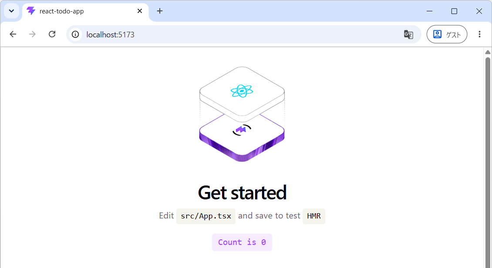
このカウントアップは React の useState
という主要な機能を利用して行なわれています。数値のカウントアップは「Hello
World」や「(組込み開発の) Lチカ」のような位置づけになります。
カウントアップの動作が確認できたら、ターミナルから [Ctrl]+[C]
を入力して、開発サーバを停止してください。
3.3 プロジェクトフォルダの構成確認
create-vite によって作成されたプロジェクトフォルダ
(react-todo-app) の構成を確認していきます。次のコマンドで VSCode
を立ち上げてください。
code .VSCodeのエクスプローラから、フォルダ構成が次のようになっていることを確認してください。
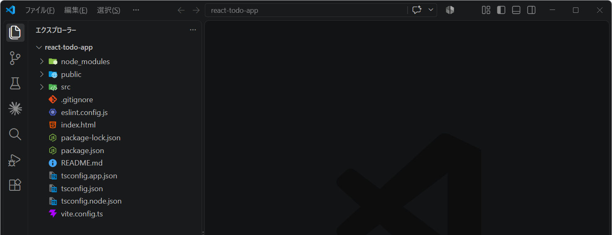
プロジェクトフォルダに配置される各ファイルの概要は以下のようになります。
3.3.1 tsconfig.**.json
プロジェクトフォルダのルートに配置される
tsconfig.json、tsconfig.app.json、tsconfig.node.json
の3つは、いずれも TypeScript関連の設定ファイル となります。
「tsconfig.json」から、「tsconfig.app.json」と「tsconfig.node.json」を参照する構成になっています。実際に
VSCode で tsconfig.json を開き、どのように参照されているか確認してください。
- tsconfig.app.json は、これから開発する React アプリのソースコード に適用される TypeScript の設定ファイルです。
- tsconfig.node.json は、Node.js 環境で実行される範囲 (例えばビルドスクリプトなど) に適用される TypeScript 設定になります。
これらのファイルは、基本的に直接編集することはありません。
プロンプト例
npx create-vite --template react-ts --eslintで開発環境を構築しました。その際、tsconfig.json、tsconfig.app.json、tsconfig.node.jsonというファイルが自動で生成されました。これらのファイルの役割について、初心者向けに解説してください。
3.3.2 README.md
「README.md」は、GitHub
のリポジトリのトップページに表示される「README」の内容を記述するファイルです。Markdown
形式（拡張子 .md）で記述します。
プロジェクトを ポートフォリオとして公開する場合は、単にアプリの機能を紹介するだけでなく、開発の背景や技術的な工夫が伝わる内容にすることが重要です。アプリの概要（機能一覧）やライセンス情報に加えて、開発の経緯（なぜそのアプリを制作したのか）、技術スタック（使用したフレームワーク・ライブラリ・ツールなど）、工夫した点やこだわりのポイントを記載するようにしてください。
3.3.3 .gitignore
「.gitignore」は、Git によるバージョン管理の対象から除外するファイルやフォルダを指定するための設定ファイルです。Git の管理対象から除外されたファイルやフォルダは、基本的に GitHub にもアップロードされません。
実際に「.gitignore」の内容を確認すると、インストールしたパッケージを格納する
node_modules フォルダのほか、データベースの接続情報や API
キーなどの機密情報を記述する .env.local ファイルが、Git
の管理対象から除外されるように設定されています。
これにより、不要なファイルや機密情報を誤って GitHub にアップロードすることを防ぐことができます。
プロンプト例
.gitignoreを適切に設定することは、セキュリティ上も非常に重要だと言われました。なぜ重要なのか、具体例を挙げて説明してください。
TypeScript でアプリを開発しています。
.gitignoreにはnode_modulesを記載するように指示されました。なぜnode_modulesを Git の管理対象から除外する必要があるのか、初心者にもわかるように説明してください。また、これはセキュリティ上の理由によるものですか？
チームで TypeScript アプリを開発しているのですが、
.gitignoreにnode_modulesを記載しないまま、リモートリポジトリにプッシュしてしまいました。どのような問題が生じる可能性がありますか？ また、どのように対処すればよいですか？
インターンシップでチーム開発に参加しているのですが、
.gitignoreに.envを記載しないまま、API キーが書かれた.envファイルを、公開設定のリモートリポジトリにプッシュしてしまいました💦 僕はどうすればいいですか？ ＼(^o^)／
API キーを記述した
.envを、うっかり Git にコミットしてしまいました。でも、まだプッシュしていなかったので、ギリギリセーフでした。ヤバかった！忘れないうちに、急いで.gitignoreに.envを追加して、その変更をコミットしてプッシュしました。適切に対処できた自分を褒めてあげたいです。
3.3.4 eslint.config.js
「eslint.config.js」はESLint という「コード品質チェックツール」に関する設定ファイルになります。例えば、ESLint を使うと 宣言されているが未使用の変数 があるときなどに「警告」や「エラー」として検出してくれます。
Lint (リント) とは、プログラミング一般において「ソースコードを解析し、バグやスタイルの問題、疑わしい構造などを検出するプロセス」を指し、そのためのツールが Linter (リンター) と呼ばれています。
C言語 や Python用の Linter もあります。ESLint は、特に ECMAScript (JavaScript / TypeScript) 用の 標準Linter として知られています。
本科目における React アプリの開発では、フォーマッタとしては Prettier (プリティア)、リンターとしては ESLint (イーエスリント) を使用していきます。
(プロンプト例)
ECMAScript とはなんですか？TypeScript や JavaScript の仲間ですか？
React (TypeScript) アプリの開発の際に、フォーマッターには「Prettier」を、リンターには「ESLint」を使用するように勧められました。両者の役割や機能の違いについて教えてください。
3.3.5 定着確認
- Git
によるバージョン管理の対象から除外するファイルやフォルダを指定する設定ファイルの名前を答えよ。
- 答え:
.gitignore
- 答え:
.gitignoreにnode_modulesを記載すると、PC 内のnode_modulesフォルダ自体も削除される。この説明は「正しい」か「正しくない」か答えよ。- 答え: 正しくない。
.gitignoreは Git の管理対象から除外するための設定ファイルであり、PC 内のファイルやフォルダが削除されることはない。
- 答え: 正しくない。
3.4 インストールパッケージ (ライブラリ) の確認
プロジェクトフォルダのなかの「package.json」の内容を確認してください。
第01回講義で既に解説 したように、package.json は「アプリの開発や実行に必要なパッケージ (ライブラリ) の情報」や「開発に使用するコマンドをショートカットとして定義」するための設定ファイルとなります。
package.json のなかの "dependencies" と
"devDependencies" の項目を確認してください。ここに記載されたパッケージ
(ライブラリ) は「node_modules」フォルダのなかにインストールされます。
(プロンプト例)
Node.js 環境における
package.jsonとpackage-lock.jsonの違いについて詳しく教えてください。
Node.js 環境における
package.jsonのなかの"dependencies"と"devDependencies"の違いを教えてください。
3.5 Reactアプリのビルドと動作確認
VSCode のターミナルで以下のコマンドを実行すると、React アプリケーションを
開発モードで起動できます。dev は
Development（開発）の略です。
npm run devnpm run devで実行されるコマンドは、package.jsonの"scripts"セクションに定義されています。今回のプロジェクトではviteが設定されているため、npx viteのようにコマンドを打って直接実行しても同様に開発サーバが起動します。
開発モードでは、ソースファイル ( *.ts や *.tsx )
を変更すると、その内容が自動的にアプリケーションに反映されます。そのため、コードを修正するたびに開発サーバーを再起動する必要はありません。
開発サーバーを停止する場合は、VSCode
のターミナルをアクティブにして、[Ctrl]+[C] を押してください。
次に プレビューモード (本番環境に近い状態での動作確認) で実行してみます。
まず、ターミナルで以下のコマンドを実行し、ビルド(本番環境向けのファイルの生成) を実行します。
npm run buildビルドが正常に完了すると、プロジェクトフォルダ内に dist フォルダが生成され、そのなかに HTML、CSS、JavaScript などのビルド済みファイルが出力されます。
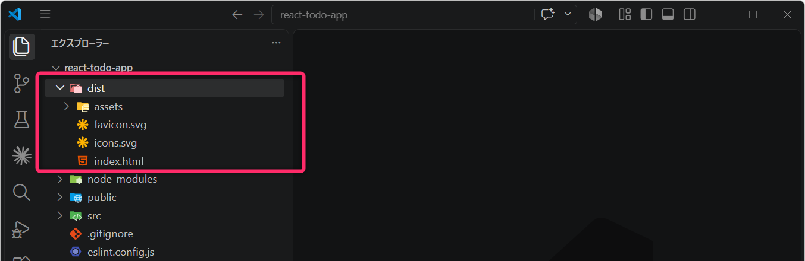
次に、ビルドしたアプリケーションの動作を確認するため、以下のコマンドで
プレビューサーバを起動します ( dist
フォルダに出力されたアプリを実行します)。
npm run preview通常は 4173 番ポートでプレビューサーバーが起動します。ウェブブラウザから http://localhost:4173/ にアクセスして動作を確認してください。
なお、開発モードでの実行とプレビューモードでの実行には、いくつかの違いがあります。具体的にどのような違いがあるのかは生成AIを活用して調べてみてください。
dist フォルダに出力されたアプリを実行するためには npm run preview
コマンドを入力します。
プレビューモードでの動作を確認できたら、[Ctrl]+[C] で
アプリを停止 しておいてください。
プロンプト例
Vite で React 開発をしています。
npm run devでアプリを実行したときと、npm run buildしてからnpm run previewでアプリを実行したときの違いを教えてください。
3.6 不要なファイルや記述を削除
React の基本的な仕組みを理解するため、Vite が生成したプロジェクトから 学習に不要なファイルやコードを削除し、必要最小限の構成に整理していきます。
3.6.1 index.html の編集
index.html を以下のように編集してください。今回は、<html>
タグと <title> タグの2か所を変更します。
<!doctype html>
<html lang="ja">
<head>
<meta charset="UTF-8" />
<link rel="icon" type="image/svg+xml" href="/favicon.svg" />
<meta name="viewport" content="width=device-width, initial-scale=1.0" />
<title>TodoApp</title>
</head>
<body>
<div id="root"></div>
<script type="module" src="/src/main.tsx"></script>
</body>
</html>- 第02行目：
<html lang="en">を<html lang="ja">に変更します。これは、ページで使用する言語を英語から日本語に変更するための設定です。 - 第07行目：
<title>react-todo-app</title>を<title>TodoApp</title>に変更します。これは、ブラウザのタブなどに表示されるページタイトルの設定です。
なお、リンターやフォーマッターの設定によって、タグの大文字・小文字や引用符の種類などが自動的に変更される場合がありますが、動作に影響しない違いであれば気にする必要はありません（以降も同様）。
最後に、ファイルの保存を忘れないようにしてください。
3.6.2 src/App.tsx の編集
src/App.tsx を次のように編集してください。
import { useState } from "react";
const App = () => {
const [count, setCount] = useState(0);
const countUp = () => {
const newCount = count + 1;
setCount(newCount);
};
return (
<div>
<h1>TodoApp</h1>
<button onClick={countUp}>count is {count}</button>
</div>
);
};
export default App;拡張子 .tsx は、TypeScript と JSX (HTML に似た構文)
を組み合わせたコードを記述するファイルに使用されます。
このプログラムの内容については後ほど詳しく解説するので、現時点では深く理解する必要はありません。まずは、開発環境の構築を優先して進めます。
第12行目 でボタンをクリックすると onClick={countUp}
によって、第05行目 で定義されている countUp
関数が呼び出されるのかな🤔…ぐらいの簡単な理解で大丈夫です。
先ほどと同様に、最後に ファイルの保存を忘れないようにしてください。
3.6.3 ファイルとフォルダの削除
Tailwind CSS を導入するため、不要になる CSS 関連のファイルや記述を整理します。
src/App.cssは、ファイルごと削除してください。src/index.cssは、ファイルの内容をすべて削除して空にしてください（ファイル自体は削除せずに残してください）。- 各種画像（
react.svg、vite.svg、hero.png）も使用しないため、src/assetsフォルダごと削除してください。
以上の作業を終えると、プロジェクトのファイル構成は以下のようになります。
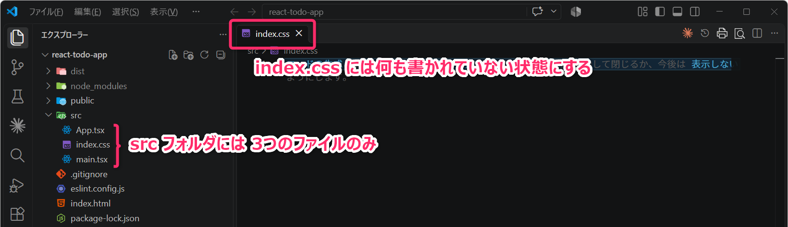
3.6.4 README.md の編集
README.md を以下の内容に書き換えてください。今回は、ライセンスとして
MIT License を採用します。
なお、第13行目の Copyright (c) 2026 Kosen Taro
については、著作権者の名前を自分の名前に変更してください
(ハンドルネームでも問題ありません)。
# TodoApp
React、TypeScript、Tailwind CSS を使用し、ローカルストレージでデータを永続化した「Todoアプリ」です。
## 開発履歴
- 2026年10月16日：プロジェクト開始
## ライセンス
MIT License
Copyright (c) 2026 Kosen Taro
Permission is hereby granted, free of charge, to any person obtaining a copy
of this software and associated documentation files (the "Software"), to deal
in the Software without restriction, including without limitation the rights
to use, copy, modify, merge, publish, distribute, sublicense, and/or sell
copies of the Software, and to permit persons to whom the Software is
furnished to do so, subject to the following conditions:
The above copyright notice and this permission notice shall be included in all
copies or substantial portions of the Software.
THE SOFTWARE IS PROVIDED "AS IS", WITHOUT WARRANTY OF ANY KIND, EXPRESS OR
IMPLIED, INCLUDING BUT NOT LIMITED TO THE WARRANTIES OF MERCHANTABILITY,
FITNESS FOR A PARTICULAR PURPOSE AND NONINFRINGEMENT. IN NO EVENT SHALL THE
AUTHORS OR COPYRIGHT HOLDERS BE LIABLE FOR ANY CLAIM, DAMAGES OR OTHER
LIABILITY, WHETHER IN AN ACTION OF CONTRACT, TORT OR OTHERWISE, ARISING FROM,
OUT OF OR IN CONNECTION WITH THE SOFTWARE OR THE USE OR OTHER DEALINGS IN THE
SOFTWARE.3.7 動作確認 (CSSの剝ぎ取り)
VSCodeの ターミナルから以下のコマンドを実行し、開発モードでアプリの動作を確認してください。
npm run devCSS 関連のファイルや記述を削除したため、以下のような シンプルなアプリ画面 (＝CSS による装飾がなく、HTML の標準的なスタイルだけが適用された状態) になっているはずです。
ただし、ボタンをクリックしたときのカウントアップ機能 は、引き続き正常に動作することを確認してください。
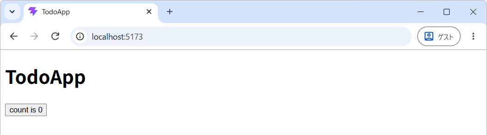
動作確認ができたら、VSCode のターミナルで [Ctrl]+[C]
を押して、開発サーバを停止しておいてください。
3.8 Tailwind CSS の適用
この授業では、Tailwind CSS という CSS フレームワークを使用して解説を進めますが、すでに使い慣れた CSS フレームワークがあれば、そちらを使用しても問題ありません。
Tailwind CSS は、あらかじめ用意された スタイルを指定するための小さな CSS クラス を組み合わせて、UI のデザインを調整する点に特徴があります。
例えば、ボタン要素の背景色や余白、角の丸みなどを設定する場合、Tailwind CSS では、それぞれのスタイルに対応した ユーティリティクラス (特定のスタイルを適用するための CSS クラス) と呼ばれるものを組み合わせて指定します。
具体的には、次のようなユーティリティクラスが用意されています。
m-5：上下左右に 5 スケール分の外側余白 (マージン) を設定するrounded：四隅を丸くするbg-blue-500：背景色を青色 (色の濃さを表す値が 500) にするpx-5：左右に 5 スケール分の内側余白 (パディング) を設定するpy-1：上下に 1 スケール分の内側余白 (パディング) を設定するtext-white：文字色を白色にする
これらを以下のように適用すると…
次のようにボタンのスタイルを調整することができます。
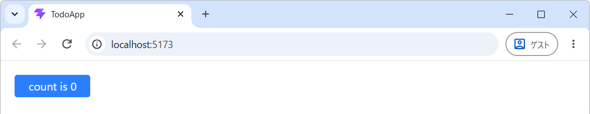
Tailwind CSS を採用することで、独自の CSS クラス名を考えたり、スタイルの衝突を気にしたりする場面 が少なくなり、非常に効率的に UI を開発できます。また、デザインの一貫性や保守性を保ちやすいというメリットもあります。
なお、本科目の後半で扱う Next.js も Tailwind CSS に対応しており、さまざまな ウェブアプリの開発で利用されています。
プロンプト例
CSS フレームワークとはなんですか？代表的なものを教えてください。
3.8.1 Tailwind 関連パッケージのインストール
VSCode のターミナルで以下のコマンドを実行し、Tailwind CSS 本体と、Vite と連携するためのプラグインをインストールしてください。
npm i -D --save-exact tailwindcss@4.3.3 @tailwindcss/vite@4.3.3つづいて、コード整形ツールの Prettier と、Tailwind CSS のユーティリティクラスを自動的に並び替えるためのプラグインをインストールします。第01回の講義で導入したもの は、VSCode の Prettier 拡張機能です。今回は、コード整形を行う Prettier 本体を、プロジェクト内にインストールします。
npm i -D --save-exact prettier@3.9.10 prettier-plugin-tailwindcss@0.8.1これらのパッケージは開発やビルドの際に使用するため、-D オプションを付けて
開発依存関係（devDependencies） として追加します。
Tailwind CSS 自体は開発時に使用するツールですが、Tailwind CSS によって生成された CSS は本番用のアプリにも組み込まれ、画面のデザインに反映されます。
3.8.2 設定ファイルの追加と変更
プロジェクトのルート (トップレベル) に .prettierrc というファイルを新規作成し、以下の内容を記述してください。このファイルは、プロジェクト内の Prettier の動作を設定するもので、第01回講義でインストールを指示した VSCode の Prettier 拡張機能 も、この設定を使用します。
{
"semi": true,
"plugins": ["prettier-plugin-tailwindcss"],
"tailwindStylesheet": "./src/index.css"
}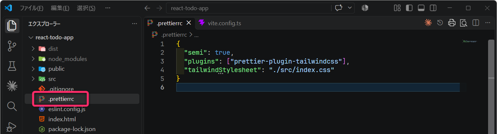
ここで tailwindStylesheet は、Tailwind CSS を読み込む CSS
ファイルの場所を指定する設定です。ここでは、このあと編集する src/index.css
を指定しています。
以上の設定によって、Prettier が Tailwind CSS
のユーティリティクラスを自動的に並び替えてくれるようになります。たとえば
<div className="text-center bg-blue-500 p-4">
のようなクラス指定は、ファイルの保存時に Tailwind CSS が推奨する順序
(レイアウト・余白・背景色・文字の装飾などを一定の規則に従って並べる順序)
に沿って、自動整列されるようになります。
次に、プロジェクトのルートの vite.config.ts
を以下のように変更してください。忘れずに保存もしてください。第03行目 で
tailwindcss をインポートして、第07行目
でプラグインとして設定しています。
import { defineConfig } from "vite";
import react from "@vitejs/plugin-react";
import tailwindcss from "@tailwindcss/vite";
// https://vite.dev/config/
export default defineConfig({
plugins: [react(), tailwindcss()],
});つづいて、src/index.css (先ほど内容を空にしたファイル)
に、以下の内容を記述して保存してください。
src/index.css は、src/main.tsx の 第03行目
で読み込まれています。これにより、Tailwind CSS
によるスタイリングがアプリケーション全体で利用できるようになります。
ここまでに編集した すべてのファイルが保存されていることを再確認してください。
この状態で npm run dev で動作確認すると、以下のような画面になります。Tailwind
CSS の初期化処理 (Preflight)
によって、ブラウザが標準で適用するスタイルもリセットされるため、装飾がほとんどない状態
となります。
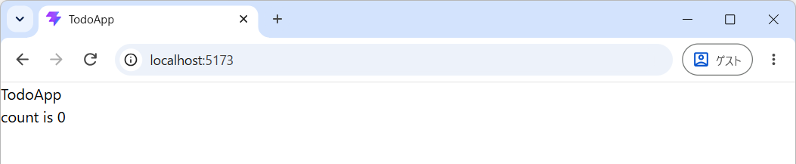
- ボタンとしての枠線が無くなって分かりづらいですが「count is 0」の文字を押下すると、問題なくカウントアップは機能することを確認してください。
npm run buildについても、問題なく実行できることを確認してください。
3.8.3 Tailwind によるスタイリング
ここからは、src/App.tsx に記述されている App コンポーネントに Tailwind CSS のユーティリティクラスを指定し、画面のデザインを調整していきます。ファイルの内容を、以下のように書き換えてください。
import { useState } from "react";
const App = () => {
const [count, setCount] = useState(0);
const countUp = () => {
const newCount = count + 1;
setCount(newCount);
};
return (
<div className="mx-4 mt-10 max-w-2xl md:mx-auto">
<h1 className="mb-4 text-2xl font-bold">TodoApp</h1>
<button
className="rounded bg-blue-500 px-4 py-2 text-white hover:bg-blue-700"
onClick={countUp}
>
count is {count}
</button>
</div>
);
};
export default App;書き換えたのは 第10行目 から 第18行目 の範囲 (
return しているJSX構文の内部) になります。
具体的には、<div>、<h1>、<button> の各タグに className
属性を追加し、そこに mx-4 や font-bold などの Tailwind CSS
のユーティリティクラスを指定しています。
通常の HTML では、<div class="..."> のように class 属性
を使って CSS クラスを指定します。
しかし、React の JSX では、<div className="..."> のように
className 属性 を使用します。JSX は HTML によく似た構文ですが、HTML
そのものではありません。そのため、属性の指定方法など、一部に違いがあります。JSX
の詳しい仕組みについては、後ほど解説します。
HTMLとCSS
「HTML」と「CSS」の基礎は、前期の情報3の「第11回講義」と「第12回講義」で学習済みです。
以下のように、CSSファイル main.css
を作成し、そこに「CSSクラス」を独自に定義して <div class="container" >
のように class 属性を使ってHTML要素のスタイリングをしました。
以上で、Tailwind CSS の適用が完了しました。
npm run dev を実行し、アプリの動作を確認してください。
特に、ボタンにマウスカーソルを重ねる（ホバーする）と背景色が変化することや、ブラウザのウィンドウ幅に応じて、左右の余白やコンテンツの配置が自動的に調整されること を確認してください。
また、レスポンシブデザイン
が適用されていることも確認してください。ブラウザのウィンドウ幅を変更するほか、[F12]
キーで開発者ツールを開き、モバイル端末の表示をシミュレーションしてみてください。
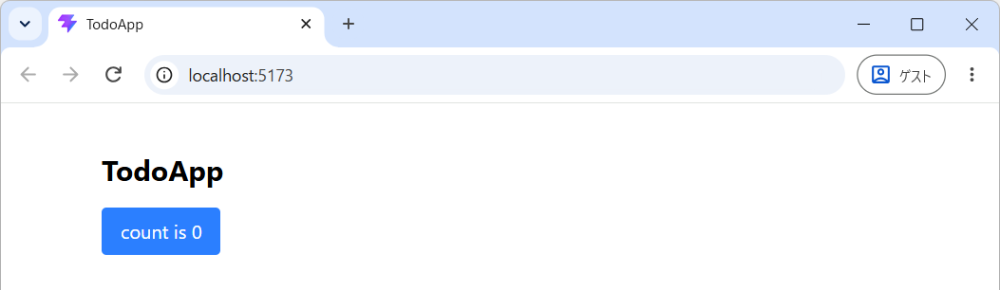
3.8.4 演習
開発モード (npm run dev) でアプリを実行している間は、ホットリロード
が有効になります。これにより、ソースコードを書き換えて保存すると、その変更が自動的にウェブブラウザ上の画面に反映されます。
実際に開発モードでアプリを起動し、src/App.tsx
に対して以下の変更を加えてください。それぞれの変更について、ファイルを保存したときに画面の表示がどのように変化するか
を確認してください。
<h1>タグにtext-violet-600クラスを追加してください。- つまり、
<h1 className="mb-4 text-2xl font-bold text-violet-600">TodoApp</h1>のように変更します。
- つまり、
<button>タグのroundedをrounded-fullに変更し、角の丸みがどのように変化するか確認してください。その後、rounded-xsに変更して比較してください。<button>タグのpy-2をpy-1に変更し、ボタンの上下の余白がどのように変化するか確認してください。その後、py-0.5に変更して比較してください。<button>タグにcursor-not-allowedクラスを追加し、ボタンにマウスカーソルを重ねたときの変化を確認してください。
3.8.5 Tailwind CSS のスタイルの調べ方
className 属性に指定する各種スタイル (ユーティリティクラス)
については、授業のなかでも随時解説していきますが、自分で調べたい場合は、Tailwind CSS の公式ドキュメント や生成 AI
を活用してください。
プロンプト例
Tailwind CSS で、次のようにスタイルが指定されていました。それぞれのユーティリティクラスの意味と、画面の表示にどのような影響があるのかを解説してください。
<div className="mx-4 md:mx-auto mt-10 max-w-2xl">
Tailwind CSS を使って、次のボタンに「ドロップシャドウ（影）」を付けたいです。どのようにすればよいですか？
<button className="bg-blue-500 hover:bg-blue-700 text-white py-2 px-4 rounded-md">ほげ</button>
4 ポート番号のカスタマイズ
Vite で構築したプロジェクトでは、デフォルトで 開発サーバ (npm run dev)
が 5173 番ポートで起動します。このポート番号は、vite.config.ts
で変更することができます。
後期中間以降の授業で使用する Next.js では、開発サーバーがデフォルトで 3000 番ポートで起動します。そこで、Next.js の開発環境に合わせて、今回の Vite プロジェクトでも 3000 番ポートを使用するように設定を変更してみます。
プロジェクトフォルダの直下にある vite.config.ts を、次のように変更してください
(第08行目 から 第12行目 が変更箇所です)。
import { defineConfig } from "vite";
import react from "@vitejs/plugin-react";
import tailwindcss from "@tailwindcss/vite";
// https://vite.dev/config/
export default defineConfig({
plugins: [react(), tailwindcss()],
server: {
port: 3000,
strictPort: false,
open: true,
},
});ターミナルから npm run dev を実行し 3000番ポート
で開発サーバが起動することを確認してください。
VITE v8.3.4 ready in 579 ms
➜ Local: http://localhost:3000/また、open: true の設定により、開発サーバーの起動時に Web
ブラウザが自動的に開く ようになります。
さらに、strictPort: false の設定により、指定した 3000
番ポートが他のアプリケーションによって使用されている場合は、3001
番ポートでの起動が試みられます。3001
番ポートも使用中であれば、3002、3003……と、利用可能なポート番号が見つかるまで順番に試行されます。
5 ESLintのカスタマイズ
ESLint (＝文法ミスやスタイルの不統一を指摘する静的解析ツール) に関連するカスタマイズについて簡単に説明しておきます。
src/App.tsx を開いて、以下のように 第04行目 に
const hoge = "Hoge"; というコードを追加してください。
import { useState } from "react";
const App = () => {
const hoge = "Hoge"; // ■■■ 追記 ■■■
const [count, setCount] = useState(0);
const countUp = () => {
const newCount = count + 1;
setCount(newCount);
};
// 以下、略すると、追記した const hoge = "Hoge"
の部分で次のように「エラー」が発生します🤮。
‘hoge’ is assigned a value but never used. eslint(@typescript-eslint/no-unused-vars)
‘hoge’ が宣言されていますが、その値が読み取られることはありません。ts(6133)
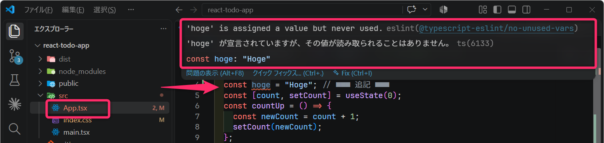
ここでは、ESLint と TypeScript の両方が、変数 hoge
が使われていないことを指摘しています。
ただし、この状態であっても 開発モード (npm run dev)
で起動した開発サーバ では
問題なくページを表示することができます。これは、Vite
の開発サーバでは、TypeScript の型チェックや ESLint
のチェックが自動では実行されないため です。
一方で、ビルド npm run build においては、TypeScript
のチェックが実行されます。そのため、以下のようにエラーとなり、ビルドが中断されます。実際に試してみてください。
PS C:\Users\xxxx\react-todo-app> npm run build
> react-todo-app@0.0.0 build
> tsc -b && vite build
src/App.tsx:4:9 - error TS6133: 'hoge' is declared but its value is never read.
4 const hoge = "Hoge"; // ■■■ 追記 ■■■
~~~~
Found 1 error.このように
開発モードでの実行には問題がないものの、本番用にビルドすると失敗する
ということは多々あります。そのため、VSCodeでエラー（赤色波線）になっている箇所
は決して放置せずに修正し、また定期的に npm run build
を実行するようにしてください。
アプリが完成したと思っていたのに、大量のビルドエラーでデプロイに失敗すると精神的なダメージが大きいです。
・・・とはいえ「hogeが宣言されていますが、その値が読み取られることはありません」のような指摘がエラー扱いになると、開発途中では非常に不便です (特に個人開発という場面では)。
ということで、「変数の未使用」を ESLint で警告するように設定していきます。まず、TypeScript 側の未使用チェックを無効にし、つづいて ESLint 側の設定を変更します。
プロジェクトのルートの tsconfig.app.json の noUnusedLocals と
noUnusedParameters の設定 (第20行目と第21行目) を、以下のように
true から false に変更してください。
{
"compilerOptions": {
"tsBuildInfoFile": "./node_modules/.tmp/tsconfig.app.tsbuildinfo",
"target": "es2023",
"lib": ["ES2023", "DOM"],
"module": "esnext",
"types": ["vite/client"],
"allowArbitraryExtensions": true,
"skipLibCheck": true,
/* Bundler mode */
"moduleResolution": "bundler",
"allowImportingTsExtensions": true,
"verbatimModuleSyntax": true,
"moduleDetection": "force",
"noEmit": true,
"jsx": "react-jsx",
/* Linting */
"noUnusedLocals": false /* ESLint でチェックするため無効化 */,
"noUnusedParameters": false /* ESLint でチェックするため無効化 */,
"erasableSyntaxOnly": true,
"noFallthroughCasesInSwitch": true
},
"include": ["src"]
}これで、未使用の変数や仮引数があっても npm run build
がエラーとなることなく実行できるようになります。実際に試してみてください。
プロンプト例
Vite で作成した React + TypeScript プロジェクトの tsconfig.app.json にある
noUnusedLocalsとnoUnusedParametersは、どのような設定ですか。それぞれをtrueからfalseに変更すると、どのようにコンパイルの挙動が変わりますか。
npm run build はエラーなく完了するようになりました。しかし、VSCode
上では、未使用変数 hoge に関するエラーが引き続き表示されています。
これは、ビルド時のエラーチェックとは別に、ESLint が未使用変数をエラーとして検出しているためです。
ここからは、それを解決していきます。
プロジェクトルートの eslint.config.js に、以下のように
rules: {...} のセクションを追加してください (第21行目 から
第35行目)。これにより、未使用のローカル変数や、未使用の関数パラメータ
(仮引数) があっても、警告 (warning) の扱いになります。
import js from "@eslint/js";
import globals from "globals";
import reactHooks from "eslint-plugin-react-hooks";
import reactRefresh from "eslint-plugin-react-refresh";
import tseslint from "typescript-eslint";
import { defineConfig, globalIgnores } from "eslint/config";
export default defineConfig([
globalIgnores(["dist"]),
{
files: ["**/*.{ts,tsx}"],
extends: [
js.configs.recommended,
tseslint.configs.recommended,
reactHooks.configs.flat.recommended,
reactRefresh.configs.vite,
],
languageOptions: {
globals: globals.browser,
},
rules: {
"no-unused-vars": "off",
"@typescript-eslint/no-unused-vars": [
"warn",
{
args: "all",
vars: "all",
caughtErrors: "all",
ignoreRestSiblings: false,
argsIgnorePattern: "^_",
varsIgnorePattern: "^_",
caughtErrorsIgnorePattern: "^_",
},
],
},
},
]);- 第24行目 の
"warn"が、警告として扱う設定です。警告も出したくない場合は、ここを"off"にします。 - 第30行目 から 第32行目 は、
_で始まる変数・引数を「意図的に未使用」とみなし、未使用警告の対象から除外する設定です。
eslint.config.js
を変更して保存するときには、少し時間がかかることがあります（全てのコードが再チェックされるため）。
以上の設定を済ませると src/App.tsx の const hoge = "Hoge";
のところが警告の扱い（赤色の波線から黄色の波線の表示）に変わっていることが確認できると思います。
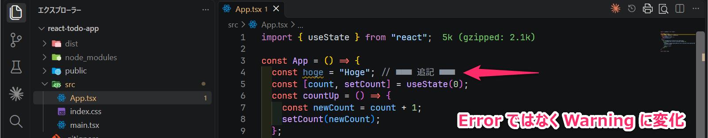
ターミナルでも、次のコマンドを順番に実行して、いずれも問題なく終了することを確認してください。
npm run lint
npm run buildnpm run lint は ESLint によるチェックを実行するコマンド
です。未使用変数 hoge に対する警告が 1 件表示され、エラーは 0
件になるはずです。
✖ 1 problem (0 errors, 1 warning)このように、Lint 関連のカスタマイズは eslint.config.js と tsconfig.app.json でできることを知っておくと役立つと思います。
注意
ESLint についての動作が確認できたら App.tsx から
const hoge = "Hoge"; を削除しておいてください。
5.0.1 演習（宿題： 20分）
現在のプロジェクトフォルダをリネームするか削除したうえで、最初からもう一度、開発環境の構築に取り組んでください。一連の作業を繰り返すことで、環境構築のおおまかな手順を身につけてください。
可能であれば、3回、4回と繰り返して練習することをおすすめします。慣れてくれば、5分もかからず、一連の環境構築を完了できるようになります。
6 Reactアプリケーションの実行順序の理解
Vite で構築した React プロジェクトを 開発モード ( npm run dev
) で実行したときに、各ファイル (各コンポーネント) が
どのような順序で読み込まれ、実行されていくのかについて解説します。
ここでは、理解のしやすさを優先するため、一部の説明を簡略化しています。厳密な動作とは異なる部分があることに注意してください。
まず、ウェブブラウザがプロジェクトフォルダの直下にある index.html
を読み込みます。このように、プログラムの実行や処理の開始点（起点）となるものを
エントリーポイント と呼びます。
<!doctype html>
<html lang="ja">
<head>
<meta charset="UTF-8" />
<link rel="icon" type="image/svg+xml" href="/favicon.svg" />
<meta name="viewport" content="width=device-width, initial-scale=1.0" />
<title>TodoApp</title>
</head>
<body>
<div id="root"></div>
<script type="module" src="/src/main.tsx"></script>
</body>
</html>次に、上記の 第11行目 に記述されている
<script type="module" src="/src/main.tsx"></script>
によって、src/main.tsx が読み込まれます。
そして、src/main.tsx の 第06行目 にある document.getElementById("root")
によって、index.html の 第10行目 に記述された
<div id="root"></div>（id が root の
div 要素）が取得されます。
この要素を React の描画先として指定することで、<App />
コンポーネントがその領域にレンダリング（描画）されます。
import { StrictMode } from "react";
import { createRoot } from "react-dom/client";
import "./index.css";
import App from "./App.tsx";
createRoot(document.getElementById("root")!).render(
<StrictMode>
<App />
</StrictMode>,
);ここでレンダリングされる <App />
コンポーネントは、src/main.tsx の 第04行目 で読み込まれている
src/App.tsx で定義されています。
<StrictMode>...</StrictMode>
については、現時点では気にする必要はありません（興味のある人は、Web 検索や生成 AI
を活用して調べてみてください）。
そして、以下に示す src/App.tsx
によって、画面に「TodoApp」という見出しや「count is
0」というボタンが表示されます。また、第05行目で定義されている
countUp
関数が、ボタンをクリックしたときに呼び出され、カウントアップが行われます。
import { useState } from "react";
const App = () => {
const [count, setCount] = useState(0);
const countUp = () => {
const newCount = count + 1;
setCount(newCount);
};
return (
<div className="mx-4 mt-10 max-w-2xl md:mx-auto">
<h1 className="mb-4 text-2xl font-bold">TodoApp</h1>
<button
className="rounded bg-blue-500 px-4 py-2 text-white hover:bg-blue-700"
onClick={countUp}
>
count is {count}
</button>
</div>
);
};
export default App;以上を整理すると、開発モードでは、次のような順序でファイルが読み込まれ、コンポーネントが呼び出されていくと考えてください。まずは、処理が階層的につながっている (ネスト構造になっている) とイメージすれば十分です。
index.htmlが読み込まれ、そこから……src/main.tsxが読み込まれ、そこで……src/App.tsxで定義された App コンポーネントが呼び出される。
さらに、今後の演習では、App コンポーネントの内部に TodoList
コンポーネント（src/TodoList.tsx）を配置し、その内部に TodoItem
コンポーネント（src/TodoItem.tsx）を配置していきます。
この場合、コンポーネントの階層構造はさらに深くなり、次のような流れになります。
index.htmlが読み込まれ、そこから……src/main.tsxが読み込まれ、そこで……src/App.tsxの App コンポーネントが呼び出され、その内部で……src/TodoList.tsxの TodoList コンポーネントが呼び出され、その内部で……src/TodoItem.tsxの TodoItem コンポーネントが呼び出される。
このように、React では、コンポーネントの内部に別のコンポーネントを配置することで、画面の構成を階層的に組み立てていきます。
6.1 ビルド (バンドル) 出力
ビルド (npm run build)
を実行すると、最適化されたプロダクトが「distフォルダ」に出力されます。
このプロダクトは トランスパイル
(TypeScript👉JavaScript)、最適化、バンドル などの処理によって
ロジックとファイルが集約されたもので、index.html
をエントリポイントとして assets/index-XXXX.js や
assets/index-XXXX.css が読み込まれるシンプルな構成になります。
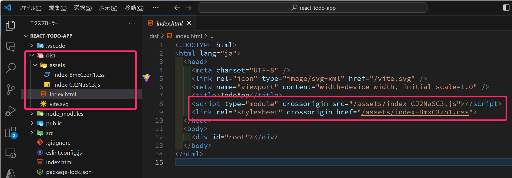
実際にビルドを実行して「distフォルダ」の各ファイルの内容について確認してみてください。
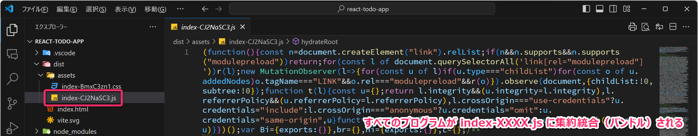
7 Reactアプリの開発
開発環境の準備ができたので、ここからは React の肝である「コンポーネントの作成と状態管理」の基本について学んでいきます。
7.1 Reactにおけるコンポーネントとは
Reactアプリは、基本的に コンポーネント (Component) とよばれる 機能と UI を持った画面構成の部品・パーツ を組み合わせてアプリを構築する点に特徴があります。
React における「コンポーネント」とは、具体的には JSX
を戻り値として返す関数など を指します。今回のプロジェクトでは、主に .tsx
という拡張子を持つファイルにコンポーネントを定義していきます。
また、JSX (JavaScript XML) とは、JavaScript (TypeScript) のコードのなかに HTML に似たタグ形式の記述 を組み込めるようにした拡張構文です。
プロンプト例
React における コンポーネント は何ですか？「JSX を戻り値として返す関数」と説明されましたが、そもそも JSX とは何ですか？初心者向けに分かりやすく解説してください。
例えば、Todo アプリに、ユーザーの名前と現在の時刻に応じて、挨拶メッセージを表示する機能を追加したいとします。このような機能は、App コンポーネントに直接記述することもできますが、独立したコンポーネントとして切り出すことで、画面の構成や役割を整理しやすくなります。
そこで、ここでは、挨拶メッセージの生成と表示を担当する WelcomeMessage
コンポーネント を作成してみます。まずは src/WelcomeMessage.tsx
というファイルを新規作成し、以下のコードを記述してください。
import React from "react";
// コンポーネントに渡す引数 (Props) の型を定義する
// 型には Props という名前を付けることがよくあります。
type Props = {
name: string;
};
// WelcomeMessage という関数コンポーネントを定義する
// コンポーネントの名前はパスカルケースで記述する
const WelcomeMessage = (props: Props) => {
// JSX を返す前に、通常の TypeScript の処理を記述できる
const currentTime = new Date();
const greeting =
currentTime.getHours() < 12 ? "おはようございます" : "こんにちは";
// 【重要】JSX を使って UI を記述し、return で返す
return (
<div className="text-blue-700">
{greeting}、{props.name}さん。
</div>
);
};
// 他のファイルから WelcomeMessage を import できるようにする
export default WelcomeMessage;- コンポーネントを定義するファイルには、一般的に
パスカルケース（PascalCase） を使用してください。
- パスカルケースとは、各単語の先頭を大文字にしてつなげる命名規則です（例：
WelcomeMessage、TodoList、TodoItem）。
- パスカルケースとは、各単語の先頭を大文字にしてつなげる命名規則です（例：
つづいて、いま作成した「WelcomeMessage コンポーネント」を
src/App.tsx でインポートし、「App
コンポーネント」の内部に組み込みます。第02行目 と
第13行目 に着目してください。
import { useState } from "react";
import WelcomeMessage from "./WelcomeMessage"; // 追加
const App = () => {
const [count, setCount] = useState(0);
const countUp = () => {
const newCount = count + 1;
setCount(newCount);
};
return (
<div className="mx-4 mt-10 max-w-2xl md:mx-auto">
<h1 className="mb-4 text-2xl font-bold">TodoApp</h1>
<WelcomeMessage name="寝屋川タヌキ" /> {/* 追加 */}
<button
className="rounded bg-blue-500 px-4 py-2 text-white hover:bg-blue-700"
onClick={countUp}
>
count is {count}
</button>
</div>
);
};
export default App;実際に試してみてください。次のような結果が得られるはずです。
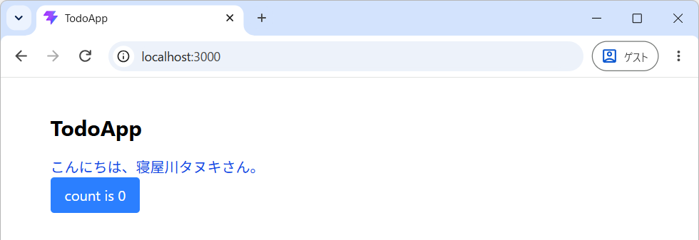
src/App.tsx では、第02行目
で「WelcomeMessageコンポーネント」を読込み、第13行目で
<WelcomeMessage name="寝屋川タヌキ" /> のように組み込んでいます。
ここでは、name という引数が、どのように WelcomeMessage
コンポーネントに渡されているか (対応関係) をよく確認してください。
例えば、name="寝屋川タヌキ" ではなく userName="寝屋川タヌキ"
のように名前をウェルカムメッセージコンポーネントに渡したいときは、WelcomeMessage.tsx
において、どこを書き換えるべきかが説明できるでしょうか？
なお、JSX要素のなかでは、コメントは {/* コメント */} のように記述します。
Reactの関数コンポーネントはパスカルケースで名前を設定すること
TypeScript では、通常、関数名に キャメルケース（小文字から開始） を使用します。一方、React の関数コンポーネントでは、パスカルケース（大文字から開始） を使用するのが基本となります。また、コンポーネントを定義するファイル名も、これに合わせて パスカルケース にするのが一般的です。
特に注意してほしいのは、JSX ではタグ名が大文字で始まるか、小文字で始まるかによって解釈が変わるという点です。小文字で始まるタグは HTML 要素などとして扱われ、大文字で始まるタグは React のコンポーネントとして扱われます。
そのため、コンポーネント名を小文字で始めてしまうと、以下のように JSX の中で正しく認識されないことがあります。注意してください。
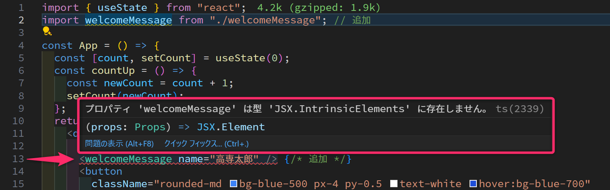
7.1.1 演習
実際に「WelcomeMessageコンポーネント」を作成して、「Appコンポーネント」のなかに組み込んでください。また、開発モードで実行結果を確認してください。
また、以下の要求を満たすようにプログラムを書き換えてください。
- ウェルカムメッセージに表示される名前を「萱島ウサギ」に変えたい。
<WelcomeMessage name="萱島ウサギ" uncompletedCount={6}/>のように未完了タスクの数をコンポーネントに渡し、「こんにちは、萱島ウサギさん。現在の未完了タスクは6個です。」のようにウェルカムメッセージを表示したい。- コンポーネントに数値を渡したいときは
uncompletedCount=6ではなくuncompletedCount={6}のようにしてください。 - ウェルカムメッセージコンポーネントが
uncompletedCountを受け取るためには、WelcomeMessage.tsxのなかのPropsの型定義の変更が必要です。 - 解答例は こちら
- コンポーネントに数値を渡したいときは
7.2 状態管理
React アプリでは、アプリ画面上で変化する値を「状態（State）」と呼ばれる仕組みで管理します。この「状態」が更新されると、React はその変更をトリガーとして、関連するコンポーネントを自動的に再レンダリング（再描画）し、画面の表示を更新します。
何らかの値（例えば「現在のカウント値」）を 状態（State） として管理し、その値の変化を画面に反映させるには、通常の変数を定義するだけでは不十分です。
React では、フック（Hook）
と呼ばれる特別な仕組みを利用して、状態の保持や更新などを行います。React
にはさまざまなフックが用意されていますが、その中でも 状態管理の基本となるものが
useState です。
先ほどのサンプルアプリでは、カウント値が変更されたときに、その結果を自動的に画面へ反映させたいため、第04行目で
useState を使用しています。
具体的には、useState(0) によって、現在のカウント値を保持する
count と、その値を更新するための関数
setCount を取得しています。
const [count, setCount] = useState(0);なお、useState の引数には
状態の初期値を指定します。例えば、カウントを「7」から開始したい場合は、const [count, setCount] = useState(7); と記述します。
useState(0)は、useState<number>(0)のように、状態として扱う値の型を明示的に指定することもできます。型を省略した場合は、初期値から TypeScript が型を推論します。
そして、現在のカウント値を取得するときは count
を参照し、カウント値を更新するときは setCount(newCount)
を呼び出します。
setCount によって状態が更新されると、React
が画面の再レンダリングを行い、画面に表示されるカウント値も更新されます。
import { useState } from "react";
const App = () => {
const [count, setCount] = useState(0); // ◀◀ 初期化(初期値を設定)
const countUp = () => {
const newCount = count + 1;
setCount(newCount); // ◀◀ 更新処理
};
return (
<div className="mx-4 mt-10 max-w-2xl md:mx-auto">
<h1 className="mb-4 text-2xl font-bold">TodoApp</h1>
<button
className="rounded bg-blue-500 px-4 py-2 text-white hover:bg-blue-700"
onClick={countUp}
>
count is {count}
</button>
</div>
);
};
export default App;一方で、以下のように useState
を使用せずに実装するとボタンを押下しても画面が更新されません
(=カウント表示が変わらない)。実際に試してみてください。
const App = () => {
let count = 0; // 通常の変数として定義
const countUp = () => {
count++; // 通常の処理で更新 count = count + 1; でも同じ
console.log(`現在の count の値は ${count} です`); // 確認出力
};
return (
<div className="mx-4 mt-10 max-w-2xl md:mx-auto">
<h1 className="mb-4 text-2xl font-bold">TodoApp</h1>
<button
className="rounded bg-blue-500 px-4 py-2 text-white hover:bg-blue-700"
onClick={countUp}
>
count is {count}
</button>
</div>
);
};
export default App;ただし、[F12]
でデベロッパーツールを起動して、コンソールタブからログを確認してみると、画面上の「カウント値」が更新されないだけで、内部的には変数
count は正常に更新されていることが確認できます。
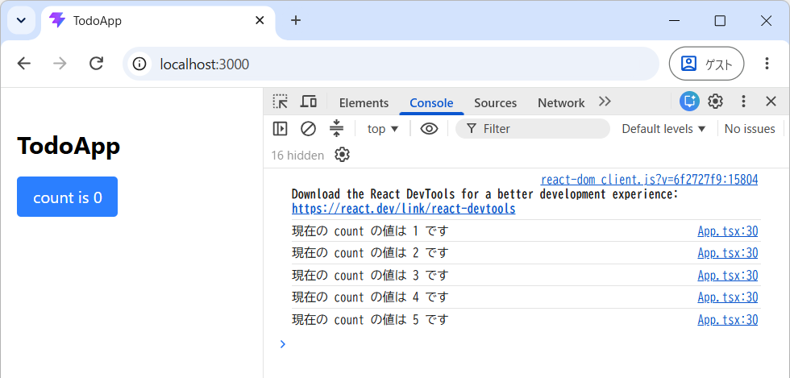
これらのことから「変更をトリガーに再レンダリングする必要がない値」については通常の変数として扱い、逆に「値の変更をトリガーに再レンダリングしたいもの」は、useState
を使って「状態」として扱う必要があることが分かると思います。
7.3 練習
次のように、カウント値の表示部をボタンの外に移動し、ボタンを「1Up」と「10Up」の2個に増やすようにアプリを拡張してみます。
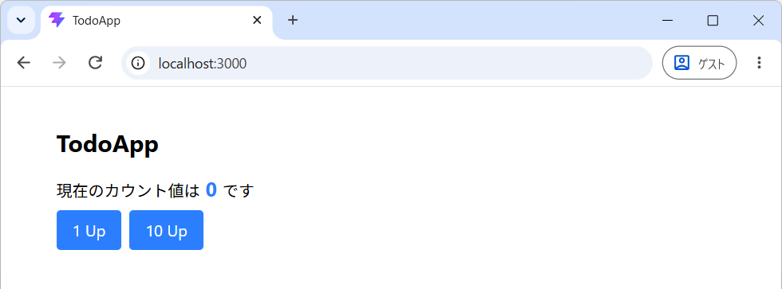
まずは、以下のようにプログラムを書き替え、実行結果とプログラムを照らし合わせてプログラムについて理解してください。
import { useState } from "react";
const App = () => {
const [count, setCount] = useState(0);
const countUp1 = () => {
const newCount = count + 1;
setCount(newCount);
};
const countUp10 = () => {
const newCount = count + 10;
setCount(newCount);
};
return (
<div className="mx-4 mt-10 max-w-2xl md:mx-auto">
<h1 className="mb-4 text-2xl font-bold">TodoApp</h1>
<div className="mb-2">
<p>
現在のカウント値は
<span className="text-xl font-bold text-blue-500"> {count} </span>です
</p>
</div>
<div className="flex flex-row gap-2">
<button
className="rounded bg-blue-500 px-4 py-2 text-white hover:bg-blue-700"
onClick={countUp1}
>
1 Up
</button>
<button
className="rounded bg-blue-500 px-4 py-2 text-white hover:bg-blue-700"
onClick={countUp10}
>
10 Up
</button>
</div>
</div>
);
};
export default App;- 第16行目 の div要素の className属性 の
mb-2をmb-6に変更すると画面がどのようになるか確認してください。また、同様にmt-6、ml-6、my-6に変更するとどのようになるか確認してください。mbは margin-bottom の略であることに気付いたでしょうか。- 参考 :Tailwind CSS - Margin
- 第22行目 の div要素の className属性 の
flex-rowをflex-colに変更するとどのようになるか確認してください。確認後は元に戻しておいてください。rowは「行」の意味です。flex-rowは子要素を行方向 (横方向) に並べるためのスタイル指定になります。colは column の略で「列」の意味です。flex-colは子要素を列方向 (縦方向) に並べるためのスタイル指定になります。
- 第22行目 の div要素の className属性 の
gap-2をgap-6に変更するとどのようになるか確認してください。確認後は元に戻しておいてください。
このプログラムには冗長な記述が多いのでリファクタリングしていきます。関数
countUp1 と countUp10 は、以下のように省略形で (1行で)
書き換えが可能です。前回講義で学んだアロー関数形式の応用です。
const countUp1 = () => {
const newCount = count + 1;
setCount(newCount);
};
const countUp10 = () => {
const newCount = count + 10;
setCount(newCount);
};実際に書き換えて、問題なく動作することを確認してください。
さらに、関数が引数を受け取るように変更して、onClick での呼び出しを
onClick={() => countUpN(1)} や
onClick={() => countUpN(10)} とすると、さらにスマートに記述ができます
(全体のコードはこちらを参照)。
また、関数 countUpN を削除して こちら
のように onClick に 直接処理を記述するような実装
もあります。
7.3.1 演習
次のように、カウントをリセットするボタンを実装してください。
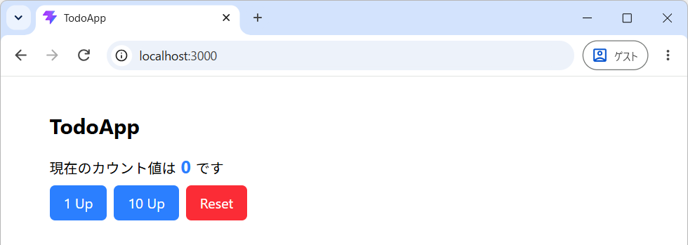
- 実装例は こちら
8 Todoアプリの実装
ここからは、前回講義までに扱ってきた Todo のデータを使い、React で Todo リストを表示するアプリを実装していきます。
8.1 準備: ライブラリのインストール
個々の Todo に ID を設定するため UUID v4 (Universally Unique Identifier Version 4) を生成可能な uuid というライブラリをインストールします。また、日時の整形には、第02回講義で使用した Day.js を使用します。
VSCode のターミナルから以下のコマンドを実行してください。
npm i --save-exact uuid@14.0.3 dayjs@1.11.23アイコン用に Font Awesome の React コンポーネントとアイコンをインストールします。Font Awesome \(\to\)
npm i --save-exact @fortawesome/react-fontawesome@3.5.0 @fortawesome/fontawesome-svg-core@7.3.1 @fortawesome/free-solid-svg-icons@7.3.1Tailwind 関連のユーティリティクラス (font-bold や px-4 など)
を動的に結合する際に、スタイリングの衝突を解決してくれる tailwind-merge
をインストールします。アプリの実行時にも使用するため、-D
を付けずにインストールします。
npm i --save-exact tailwind-merge@3.7.0プロンプト例
tailwind-mergeとは、どのようなライブラリですか？
8.2 準備: 初期データの作成
Todoリストの「初期データ」を準備します。まずは、このTodoアプリで共通使用する「型」を定義しておくためのファイル
src/types.ts を新規作成してください。
- 「src/types.ts を新規作成してください」とは「src フォルダのなかに types.ts を新規作成してください」という意味です。
作成したファイルに、以下のように Todo型 を定義してください。また 定義した型が、他のファイルで import できるように、先頭に
export
を付けてください。なお、このファイルは、単に型定義をしているだけのファイルなので拡張子は
.tsx ではなく、.ts としてください。
export type Todo = {
id: string;
name: string;
isDone: boolean;
priority: number;
deadline: Date | null; // 注意
};ここで注意してほしいのは 第06行目 で、プロパティ deadline
の型を「Date」もしくは「null」に設定している点です ( 前回講義の解説
を参照)。特に「期限を設定しないTodo」については deadline を null
として扱うものとします。
次に、Todoリストの初期データを格納するファイルとして src/initTodos.ts
を作成し、以下のように初期値 initTodos を設定してください。この
initTodos も 他のファイルから参照するので忘れずに
export
キーワードを付与してください。データの内容は自由に変更して問題ありませんが、このあとの展開の関係で
3個以上を設定 してください。
なお、第06行目 の uuid() は UUID v4 の文字列 (string型) を
ランダム に生成する関数になります (第02行目 では
v4 という関数を uuid という名前でインポートしています)。
import type { Todo } from "./types";
import { v4 as uuid } from "uuid"; // v4 を uuid という名前でインポート
export const initTodos: Todo[] = [
{
id: uuid(), // UUID v4 を生成してIDにセット
name: "解析2の宿題",
isDone: false,
priority: 2,
deadline: new Date(2026, 10, 2, 17, 30),
},
{
id: uuid(),
name: "TypeScriptの勉強 (復習)",
isDone: true,
priority: 3,
deadline: null, // このTodoには期限を設定しない
},
{
id: uuid(),
name: "基礎物理学3の宿題",
isDone: false,
priority: 1,
deadline: new Date(2026, 10, 11),
},
];- 現在の開発環境では
import type { Todo } from "./types.js";のようにインポートファイルに 拡張子をつける必要はありません。
8.3 TodoListコンポーネントの作成
Todoリストを表示するための「TodoListコンポーネント」を作成します。src/TodoList.tsx
を作成して、以下の内容を記述してください。
ここでは、練習のためにコピペではなくコードを打ち込んでください。前回講義で紹介 しているように
ES7+ React/Redux/React-Native snippets
をVSCodeの拡張機能としてインストールしていると、次の図のように rafce
と打ち込むだけで アロー関数形式のReactコンポーネントのテンプレート
が得られます。
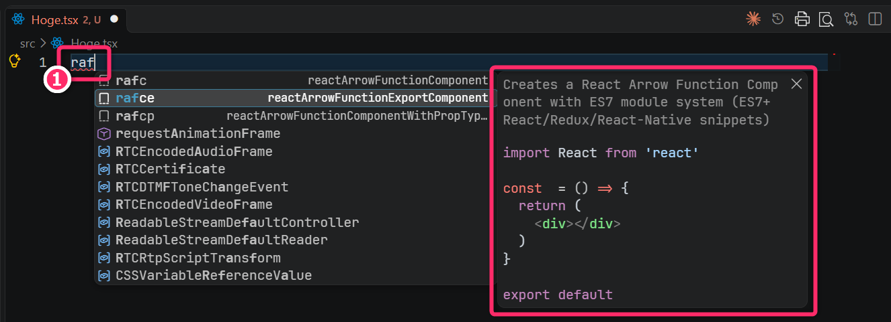
import type { Todo } from "./types";
type Props = {
todos: Todo[];
};
const TodoList = (props: Props) => {
const todos = props.todos;
return (
<div className="flex flex-col gap-y-1">
<div>
{todos[0].name} 優先度: {todos[0].priority}
</div>
<div>
{todos[1].name} 優先度: {todos[1].priority}
</div>
<div>
{todos[2].name} 優先度: {todos[2].priority}
</div>
</div>
);
};
export default TodoList;ここで定義する TodoList は、Reactの関数コンポーネントなので必ず パスカルケース
としてください。また、同様に、ファイルの名前もパスカルケースとしてください。
このコンポーネントは、Todo型の配列 todos を Props
(プロップス)
として受け取り、先頭から3件分のTodoの「名前」と「優先度」を表示しています。なお、Reactの文脈において
Props とは Properties の略称で、コンポーネントが受け取る「引数」のようなもの と考えてください。
なお、ここでの 第11行目 から 第19行目 のコードは酷いものですが、これは後で書き換えます。
8.4 Appコンポーネントの編集
src/App.tsx を次のように編集してください。第04行目 では、先ほどの演習 で未完了タスク数も受け取れるようにした WelcomeMessage コンポーネント をインポートしています。同様に 第05行目 では、Todo リストのコンポーネント (src/TodoList.tsx) をインポートしています。
また、第03行目では、Todoリストの初期データとして initTodos
をインポートしています。なお、インポートする際に 波括弧 { }
をつけてインポートしているケースと、そうでないケースがあること
に気づくと思います。これらの理由については生成AIで解決してください。
プロンプト例
Node.js 環境で TypeScript の勉強をしています。サンプルコードを見ていると、ライブラリから関数や変数をインポートする際に、波括弧
{}を付けているケースと、そうではないケースがあることに気づきました。違いについて教えてください。
import { useState } from "react";
import type { Todo } from "./types";
import { initTodos } from "./initTodos";
import WelcomeMessage from "./WelcomeMessage";
import TodoList from "./TodoList";
const App = () => {
const [todos, setTodos] = useState<Todo[]>(initTodos);
const uncompletedCount = todos.filter((todo: Todo) => !todo.isDone).length; // 未完了タスクの数え上げ
console.log(JSON.stringify(todos, null, 2));
return (
<div className="mx-4 mt-10 max-w-2xl md:mx-auto">
<h1 className="mb-4 text-2xl font-bold">TodoApp</h1>
<div className="mb-4">
<WelcomeMessage
name="寝屋川タヌキ"
uncompletedCount={uncompletedCount}
/>
</div>
<TodoList todos={todos} />
</div>
);
};
export default App;編集後、保存してから 開発モード でアプリを実行してください
(npm run dev)。次のような実行結果が得られると思います。さらに、ブラウザで
[F12] を押下して デベロッパーツール を起動してコンソール出力
(第10行目 で行われている todos の出力) も確認してください。
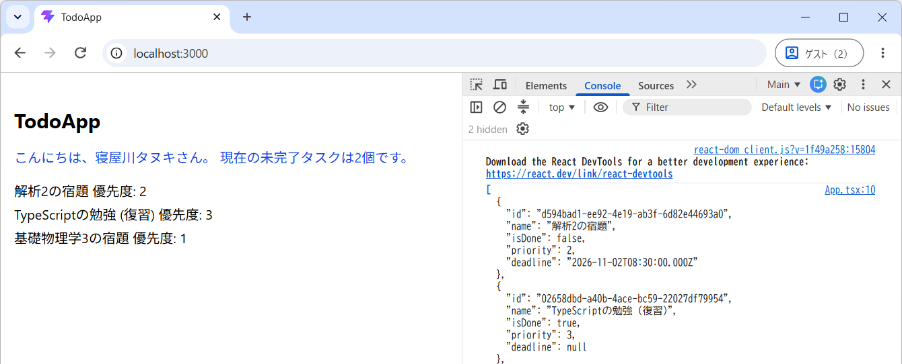
src/App.tsx と src/TodoList.tsx
について、生成AIなどを活用して読解・理解をしてください。特に、しっかりと理解してほしい箇所は次のとおりです。
src/App.tsxの 第08行目 : 現時点ではtodosを変更 (追加・削除) する処理は含んでいませんが、今後、それらの機能を実装したときにtodosの変更をトリガーに再レンダリングをしたいのでuseStateを使って「状態」として扱うようにしています。useState<Todo[]>(initTodos)ではなくuseState(initTodos)のように型推論を利用して初期化が可能です。ただし、初期値を空配列にする場合は、明示的に型を与える必要があります。
src/App.tsxの 第09行目 : ここでは、Todo型オブジェクトの配列から「未完了のタスク数」をカウントしています。前回講義で学んだ配列の filter操作 と lengthプロパティ を活用している例になります。src/App.tsxの 第21行目 の<TodoList todos={todos} />と、src/TodoList.tsxで定義しているTodoList関数の引数 (Props) が対応している点に注意してください。
8.5 TodoListコンポーネントのブラッシュアップ
現状の src/TodoList.tsx は、todos の要素数に関わらず 固定で「3件」のTodoしか表示すること
ができません。しかも、todos の要素数が
2個以下のときは実行時エラー が生じます
(Todoが1個も表示されなくなります)。
そこで、前回講義で学んだ mapメソッド
を利用して、todos の要素数にあわせて表示するように変えたいと思います。この
mapメソッドを使うテクニックは Reactでは定番中の定番処理
となるので確実に読解かつ記述できるようにしてください。
import type { Todo } from "./types";
type Props = {
todos: Todo[];
};
const TodoList = (props: Props) => {
const todos = props.todos;
return (
<div className="flex flex-col gap-y-1">
<div>
{todos[0].name} 優先度: {todos[0].priority}
</div>
<div>
{todos[1].name} 優先度: {todos[1].priority}
</div>
<div>
{todos[2].name} 優先度: {todos[2].priority}
</div>
</div>
);
};
export default TodoList;上記のプログラムを次のように書き換えます。前回講義の オブジェクト型の配列に対するmapの適用 を参考にしながら、この書き換えを理解してください。
import type { Todo } from "./types";
type Props = {
todos: Todo[];
};
const TodoList = (props: Props) => {
const todos = props.todos;
if (todos.length === 0) {
return (
<div className="text-red-500">
現在、登録されているタスクはありません。
</div>
);
}
return (
<div className="space-y-1">
{todos.map((todo) => (
<div key={todo.id}>
{todo.name} 優先度: {todo.priority}
</div>
))}
</div>
);
};
export default TodoList;書き換え後のプログラムでは、todos が 空配列のとき
(todos.length === 0 のとき)
には、Todoリストの代わりに「現在、登録されているタスクはありません。」というメッセージを表示するようにしています。
また、map の戻り値となる一番外側の JSX 要素 (この例では
<div> 要素) については、第21行目 のように 必ず key 属性を設定してください。key の値には
配列内で重複せず、同じ Todo では再レンダリングしても変わらない値
を指定します。このアプリでは、各 Todo の id を使用します。
key 属性を設定していないと、実行時に
Each child in a list should have a unique "key" prop
という警告が表示されます。また、再レンダリングに際して意図した動作をしなくなる可能性があります。詳しい原理は生成AIで解決してください。
プロンプト例
Reactを使ったウェブアプリを開発しています。配列のmapメソッドを使用してJSXを構成する際、key属性が要求されるのは何故ですか。Reactは何のためにkey属性を必要としますか。
8.5.1 演習
前回講義で学んだように、Todoの並び替えは「配列のsortメソッド」を利用して行なうことができます。例えば、優先度を昇順
(1👉2👉3の順) にしたいときは、第08行目の
const todos = props.todos; を以下のように書き換えます。
前回講義の 複数のソートキーを使ったオブジェクト配列の並び替え
を参考にして、第1ソートキーを isDone
(未完了を先に表示)、第2ソートキーを deadline
(期限が早いものを先に表示) として並び替えた Todo
リストが表示されるようにしてください。期限がない Todo
は、同じ完了状態のグループのなかで最後に表示してください。
9 演習 (宿題)
主に src/TodoList.tsx の JSX (HTML) と Tailwind
CSS に編集を加えてTodoリストコンポーネントの表示を
自分流にカスタマイズ
してみてください。これは、UI/UXの設計練習も兼ねています。また、後期前半の大課題に関連する内容にもなってきます。
なお、現時点では「チェックボックス」や「ボタン」などの要素追加や、それに対するスタイリングは不要です (これらの内容は次回講義で扱います)。
(Todoリストのカスタマイズの例)
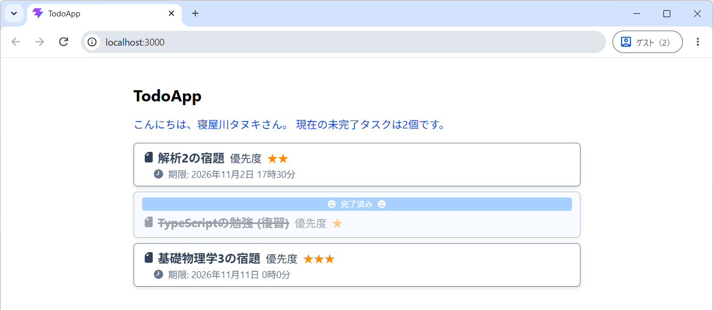
- 上記のサンプルのコードは こちら